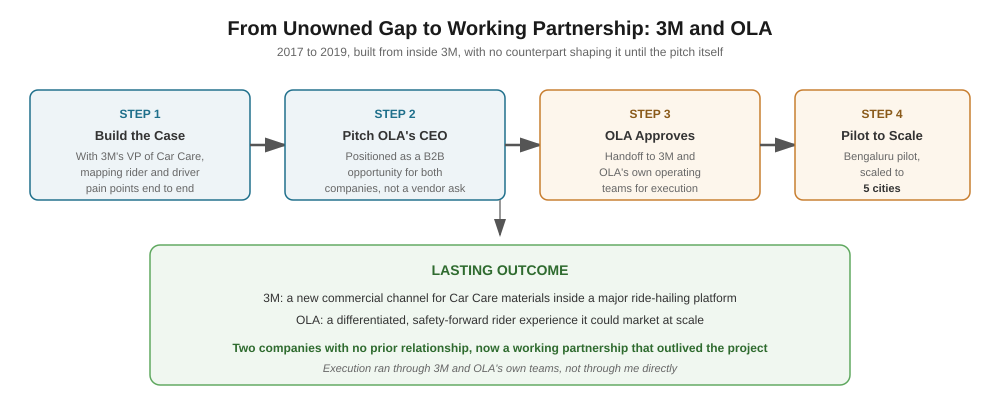

OLA had riders in 250 cities across four countries, and nobody really owned what the ride itself actually felt like, how clean it was, how safe it felt. 3M had materials and technology that could help, through its Car Care division, but no real foothold inside a ride hailing company. Two companies had overlapping interests and no relationship to act on it.
This wasn't something 3M could just pitch on the strength of a good idea. It needed a case strong enough to get in front of OLA's CEO directly, and it had to be built entirely from inside 3M, with nobody on OLA's side helping shape it before the pitch even happened.
I worked with 3M's VP of Car Care to put together the case and the pitch for a better cab riding experience, using 3M's own materials to make rides genuinely cleaner and safer. That meant mapping out the real pain points for both riders and driver partners, walking through the whole journey, and shaping a concept solid enough to take straight to OLA's leadership. Then I pitched it directly to OLA's CEO, positioning it as a real B2B opportunity for both companies, not a vendor selling something.
The pitch turned an unowned gap between two companies into a real, revenue relevant channel. 3M got a new commercial application for its Car Care materials inside one of India's biggest ride hailing platforms. OLA got a differentiated, safety focused rider experience it could actually market. Once it was approved, the pilot ran in Bengaluru and scaled to 5 cities, handled by 3M and OLA's own teams. The lasting part of this wasn't the pilot itself, it was the precedent, two companies with no prior relationship now had a working partnership that outlived the original project.
Long before Globant's Microsoft alliance or Fleetworthy's post acquisition work, this shows the same instinct in its earliest form, finding where two organizations' interests actually overlapped, and building the case needed to turn that overlap into a real commitment. The tools here were design research and a CEO level pitch instead of co-sell architecture, but the underlying move, turning something nobody owned into a commitment from someone with the authority to say yes, is the same one that keeps showing up.